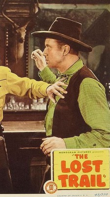

Meine Filme

Darsteller Eddie Parker
Alle Darsteller
Nr.
Titel
Jahr
FSK
Minuten
Auflösung
IMDB
Meta
Genre
4263
Auf der Spur des Todes
1956
12
81
1080p
6.5 / 10
0
Western
2652
Bettgeflüster
1959
6
102
1080p
7.5 / 10
0
Komödie
6316
Flucht vor dem Tode
1952
16
83
1080p
6.5 / 10
0
Western
1624
Hitchcock - Fenster zum Hof, Das
1954
16
112
1080p
8.5 / 10
100
Thriller
7423
Mann aus Alamo, Der
1953
12
79
1080p
6.5 / 10
0
Western
9503
San Franzisko Lilly
1945
12
91
1080p
6.4 / 10
0
Western
8706
Schwarze Reiter, Der
1947
12
99
1080p
7.0 / 10
0
Western
11492
Westwärts!
1935
12
60
1080p
5.7 / 10
0
Drama
3381
Über den Todespaß
1954
12
92
720p
7.2 / 10
0
Western